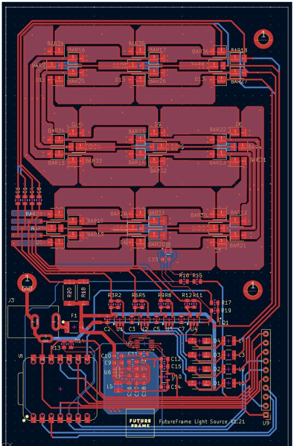
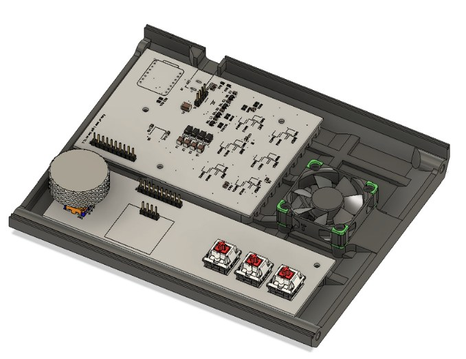
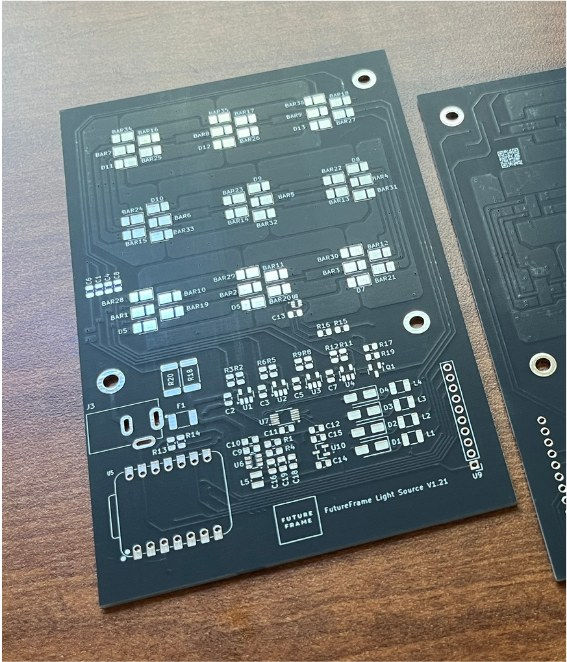

Future Frame LightCore
A precise light source for scanning photographic film. Five independent channels (red, green, blue, white, and infrared) give accurate color, even illumination, and IR for dust detection, all inside a custom housing.
- Role
- Full design and implementation (individual project)
- Tools
- KiCad, Autodesk Fusion, CircuitPython
- Controller
- Seeed XIAO RP2040
- Status
- V1.21 PCB, V1.2 housing

Electronics
A Seeed XIAO RP2040 controls the LightCore on a custom PCB. Power steps down in two stages: an AP64060 buck converter takes 36 V to 5 V, then an AP7375 LDO makes 3.3 V. Four AL8860WT LED drivers with a four-channel DAC give precise current control of the RGBW channels, while a MOSFET drives the infrared channel. A TMP302 temperature switch cuts the output at 80 °C.

| Input voltage | 36 V nominal |
|---|---|
| Voltage conversion | AP64060 buck (36 V to 5 V), AP7375 LDO (5 V to 3.3 V) |
| Control | Seeed XIAO RP2040 |
| LED control | 4× AL8860WT, DAC-controlled DC dimming |
| Overtemperature protection | TMP302BDRLR, cutoff at 80 °C |
| User controls | 0.96" OLED display, rotary encoder, mechanical switches |
| LEDs | 3× RGB, white, and infrared |
Mechanical design
The housing combines a 3D-printed body with sheet aluminum side walls for rigidity. A waterjet-cut aluminum heat spreader mounted to the PCB handles thermal management, and a two-stage diffuser gives even backlighting.
A second controller PCB inside the housing carries a rotary encoder, four switches, and an OLED display for direct control of the light panel.


Takeaways
This project strengthened my PCB design, SMT soldering, and enclosure design. I learned to turn circuit requirements into a working board layout, troubleshoot components during assembly, and design mechanical parts that fit and support the electronics. Most of all, it showed me how much the hardware and mechanical sides of a product shape each other.